您的專屬股票經理人
輕鬆管理您的股票投資
告別繁瑣的 Excel 公式、不必再手查每年的配股配息，
就連減資、分割、併購也自動處理 ── 投資明細，一目了然。
- 自動帶入股利／減資／分割資料
- 精準計算交易稅、補充保費、年化報酬率
- 雲端同步、歷史回溯、TWR / XIRR 全包
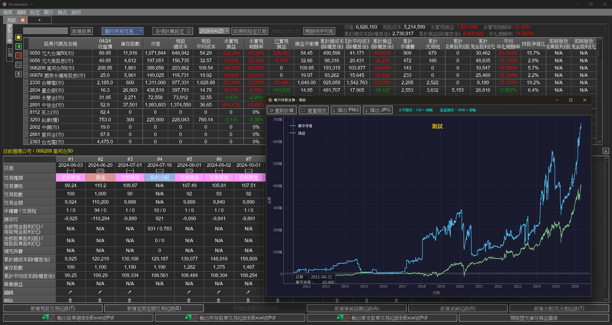
StockKeeper 程式特點
一套為台股投資人量身打造的工具，把繁瑣的計算與資料維護都自動化。
自動計算費用
自動計算手續費與交易稅，正確區分普通股 0.3%、ETF 0.1%、債券 ETF 0%。
自動帶入股利
每年股利自動帶入，多位小數精準計算，不再有零頭誤差。
精準補充保費
區分「盈餘分配」與「法定盈餘公積」,股利補充保費算到位。
自動處理減資
自動抓取公告減資資料,區分現金減資與虧損減資,紀錄不間斷。
自動處理分割
自動抓取公告分割／合併資料,調整庫存股數,持股數據永遠正確。
年化報酬率
即時顯示個股與總投資的平均年化報酬率,隨時掌握績效。
彈性交易設定
自訂各帳號折數、小數進位方式,符合個人化交易習慣。
雲端模式 NEW
Google 帳號一鍵登入,多裝置自動同步,單機檔案無痛升級。
四大全新體驗,投資紀錄再進化
從本地走向雲端,從當下回望歷史 ── 這次更新為你帶來更完整的投資全貌。
Google 帳號登入,多裝置同步
不再被單一電腦綁住。雲端模式讓你在家、在公司、在出差時都能即時查看最新庫存,並保留完整的本地單機選項。
- Google OAuth 一鍵登入
- 單機檔案可一鍵升級為雲端版
- 本地、雲端隨時可切換
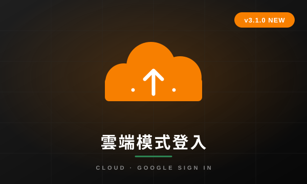
一張圖看懂庫存與累計損益
同時呈現庫存淨值與累計損益走勢,讓你一眼分辨庫存變多是因為「投入更多本金」還是「真的有賺到錢」。
- 雙線同步比對,趨勢一目了然
- 滑鼠 Hover 即時顯示當日數值
- 支援多種時間區間切換
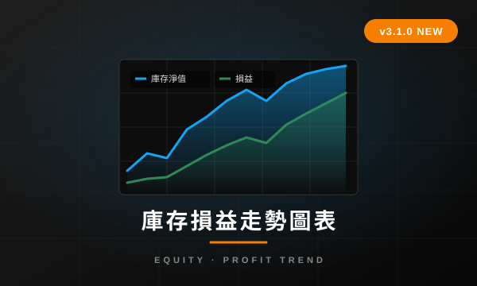
選一個日期,看見當時的你
選定任一日期,立即回顯當天的實際持股、收盤價與損益狀態,讓你客觀檢討過去的買賣決策。
- 一鍵切換到任一過去日期
- 還原當日庫存、價格、損益
- 讓決策檢討有真實依據
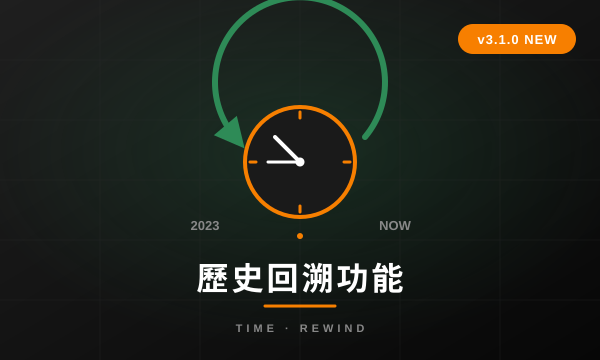
TWR / XIRR,績效算給你看
自訂時間區段檢視所有交易,並自動計算時間加權報酬率(TWR)與年化內部報酬率(XIRR),投資績效不再只憑感覺。
- 自訂任意時間區段
- 同時計算 TWR 與 XIRR
- 看清每段期間的真實表現
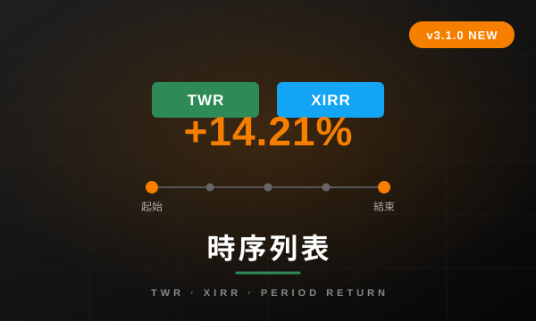
學習 StockKeeper 使用技巧
雲端模式登入與資料同步
使用 Google 帳號一鍵登入雲端版，舊有單機檔案可自動匯入，並支援多裝置同步。
庫存損益走勢圖表
同時呈現庫存淨值與累計損益走勢，一眼看出庫存變多是因為本金還是真的有賺。
歷史回溯功能
選定任一日期，立即回顯當日的實際持股、收盤價與損益狀態，方便檢討過去決策。
時序列表（TWR / XIRR）
自訂時間區段檢視所有交易，並自動計算時間加權報酬率與年化報酬率。
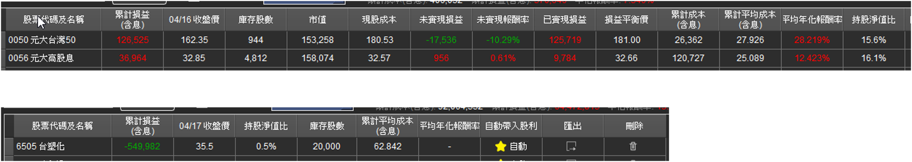
如何調整欄位顯示及順序
自訂您的顯示介面，自由設定對您最重要的資訊。
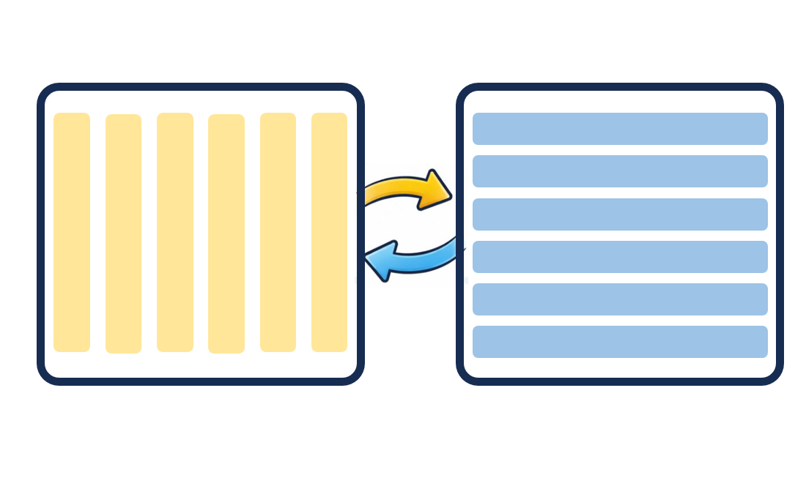
如何調整交易欄位顯示方向
自由調整顯示方向，讓操作更符合您的習慣。
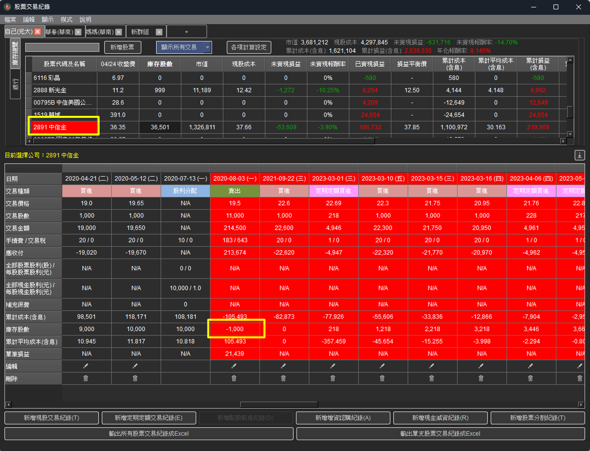
防呆功能
檢查庫存資料是否有任何不合理之處。
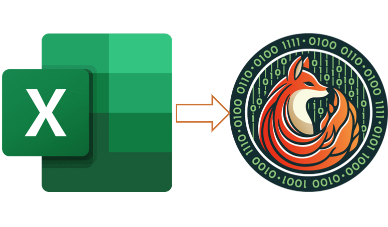
如何匯入Excel對帳單
匯入劵商提供的對帳單，一次將歷史交易全部匯入進系統中。
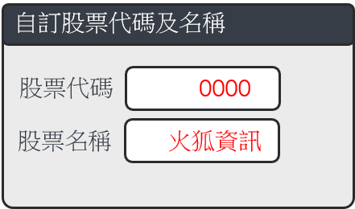
自訂股票代碼及名稱
根據自訂股票代碼的設定，程式可以自訂未公開發行或已下市的公司的股票代碼及名稱。
併購設定
根據併購設定，程式會自動將原有股票依照換股條件或是現金收購價進行調整。
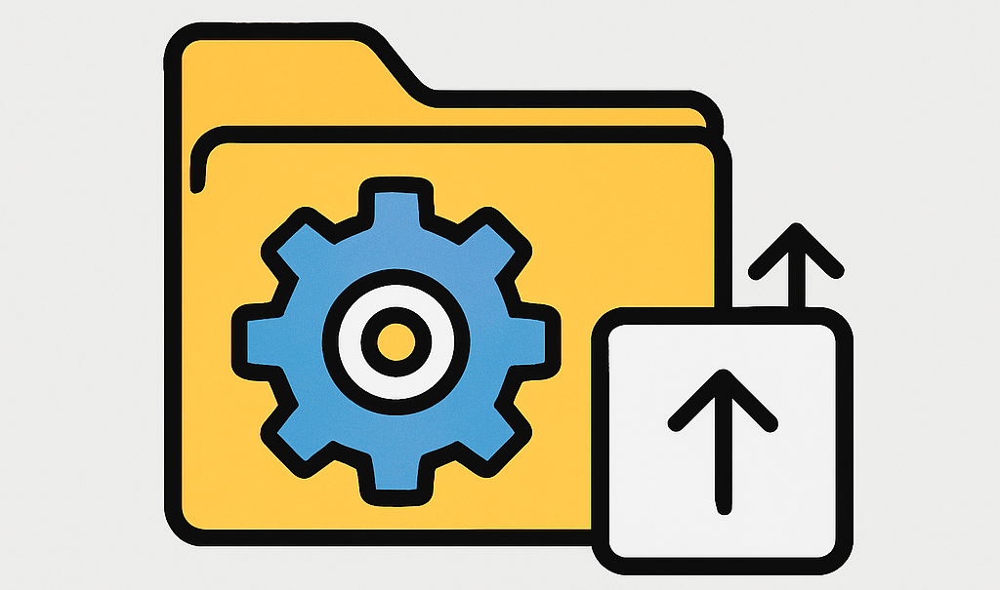
設定暫存檔位置
使用者可自由設定交易資料及UI檔案儲存路徑。
重新下載資料
若資料有誤或遺失，可透過此功能重新下載最新資料。
各項計算設定
進階設定手續費、小數進位方式、股利匯費等各種計算方式。
更多教學將陸續推出，敬請期待！